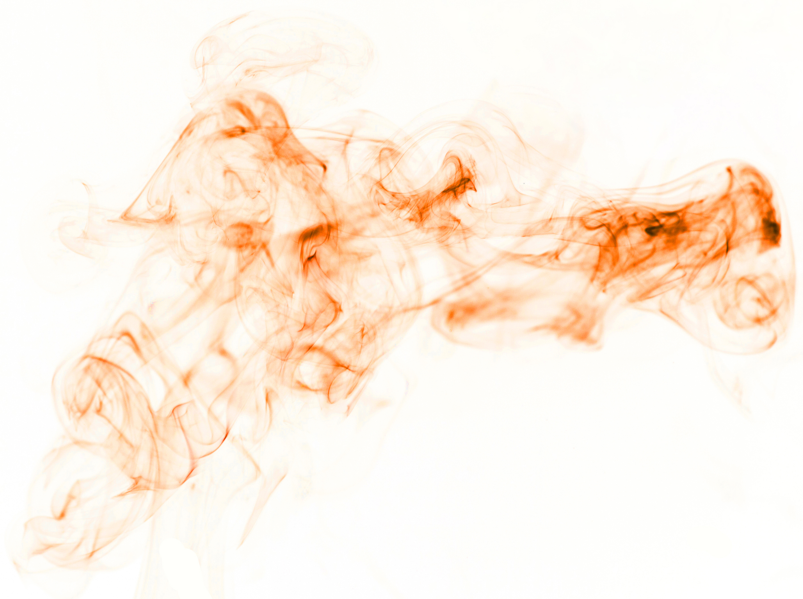
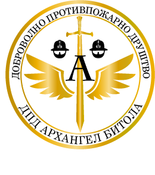
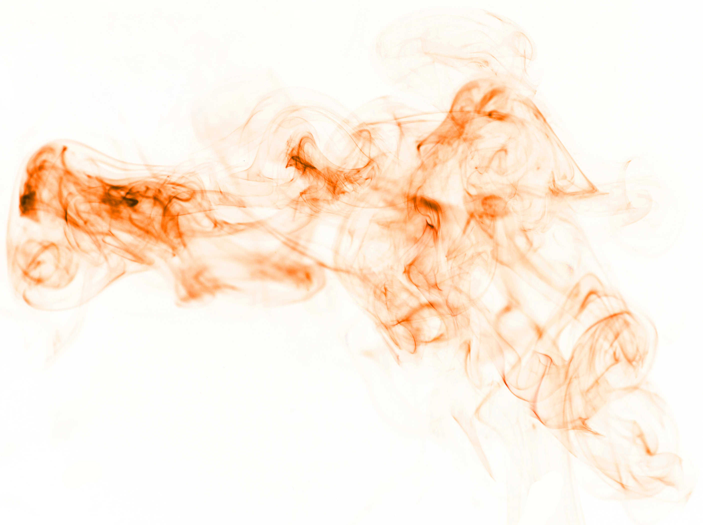

Доброволното Противпожарно друштво ДПД Архангел Битола е друштво за заштита од пожар како и за заштита и
превенција од други природни катастрофи, седиштето и регионот во кој друштвото функционира е на територијата на Општина
Битола...
Oсновни цели и насоки на дејствување се противпожарна заштита, превенција и спречување на пожари, интервенција односно
гасење на истите, како и санација на последиците од појава на пожари. Со оглед на тоа што во нашата општина, а и на државно
ниво противпожарната заштита е на многу ниско ниво, нашата цел е преку организирање на обуки за волонтери да се обезбеди
доволен број на обучени и спремни граѓани за интервенција во случај на пожари. Исто така нашата цел е да обезбедиме опрема
со која што овие волонтери би можеле да функционираат при евентуални пожари. Нашата цел е да придонесеме за безбедноста на
локалното население како и на посетителите на регионот, на територијата на Општина Битола и во Националниот Парк Пелистер.
Покрај противпожарната заштита нашето друштво ќе се фокусира и на заштита од разни други природни катастрофи и незгоди кои
го загрозуваат животот и имотот на населението и посетителите во регионот.
Нашето друштво има за цел да понуди подобра заштита на регионот од пожари и други природни непогоди. Да формира патролни
единици (кои би се грижеле за безбедноста на туристите , жителите, планинарите - воедно би биле прва помош, спасители,
пожарникари, водичи, советници за голем број прашања проблеми со кои се соочуваат како посетителите така и локалното население).
ДПД Архангел Битола обезбедува секаква заштита за населението во регионот, меѓутоа нема да се ограничи само на
населението и ќе изврши обука на свои членови за заштита и спасување на животнискиот и растителниот свет во случај на природни
катастрофи, како и заштита на истите од несовесни граѓани.
Доброволно противпожарно друштво - ДПД АРХАНГЕЛ - Битола
Ул Стара Чешма бр. 1, Горно Оризари 7000 Битола
+389-(0)78-714-095 : 079-283-099
Е-маил: dpdarhangel@yahoo.com
Ж-ска 270-0074304420134 Халк Банка АД Скопје
ЕДБ 4002020560182